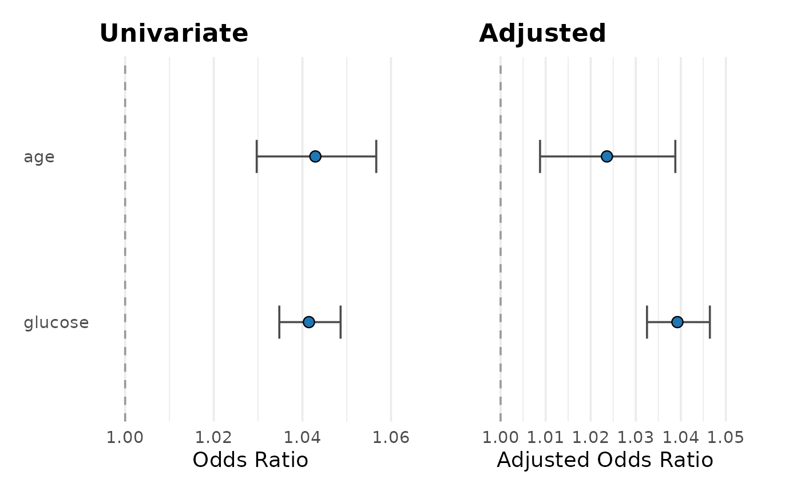

Side-by-Side Forest Plots: Univariate vs Multivariable
Source:R/plot_reg_combine.R
plot_reg_combine.RdCreates two aligned forest plots (univariate and multivariable) from `gtsummary`-style objects returned by `gtregression` functions (e.g., `uni_reg()`, `multi_reg()`).
Usage
plot_reg_combine(
tbl_uni,
tbl_multi,
title_uni = NULL,
title_multi = NULL,
ref_line = NULL,
order_y = NULL,
log_x = FALSE,
point_color = "#1F77B4",
errorbar_color = "#4C4C4C",
base_size = 14,
show_ref = TRUE,
sig_color = NULL,
sig_errorbar_color = NULL,
xlim_uni = NULL,
breaks_uni = NULL,
xlim_multi = NULL,
breaks_multi = NULL,
alpha = 0.05
)Arguments
- tbl_uni
Univariate `gtsummary`-like table.
- tbl_multi
Multivariable `gtsummary`-like table.
- title_uni, title_multi
Optional panel titles.
- ref_line
Optional numeric reference line (defaults to 0 for linear, 1 otherwise, inferred per panel).
- order_y
Optional character vector to customize header ordering.
- log_x
Logical. If `TRUE`, use log x-axis (ignored for linear models).
- point_color, errorbar_color
Base colors for non-significant rows.
- base_size
Base font size for `theme_minimal()`.
- show_ref
Logical; if `TRUE`, include and tag reference levels `(Ref.)`.
- sig_color, sig_errorbar_color
Optional colors for significant rows; if `NULL`, they reuse the base colors.
- xlim_uni, breaks_uni
Optional x-limits and breaks for the univariate panel.
- xlim_multi, breaks_multi
Optional x-limits and breaks for the multivariable panel.
- alpha
Significance level for linear models when `p.value` is available.
Details
The y-axis rows are aligned by a unique `(variable, level)` key so each estimate appears exactly once per panel. Label styling is plain text by default (CRAN-safe). To render bold headers / grey refs in vignettes, pair
Examples
# \donttest{
if (requireNamespace("mlbench", quietly = TRUE) &&
requireNamespace("gtregression", quietly = TRUE)) {
data("PimaIndiansDiabetes2", package = "mlbench")
d <- PimaIndiansDiabetes2
d$diabetes <- ifelse(d$diabetes == "pos", 1, 0)
tbl_u <- gtregression::uni_reg(d, outcome = "diabetes",
exposures = c("age","glucose"), approach = "logit")
tbl_m <- gtregression::multi_reg(d, outcome = "diabetes",
exposures = c("age","glucose"), approach = "logit")
plot_reg_combine(tbl_u, tbl_m,
title_uni = "Univariate", title_multi = "Adjusted")
}

# }